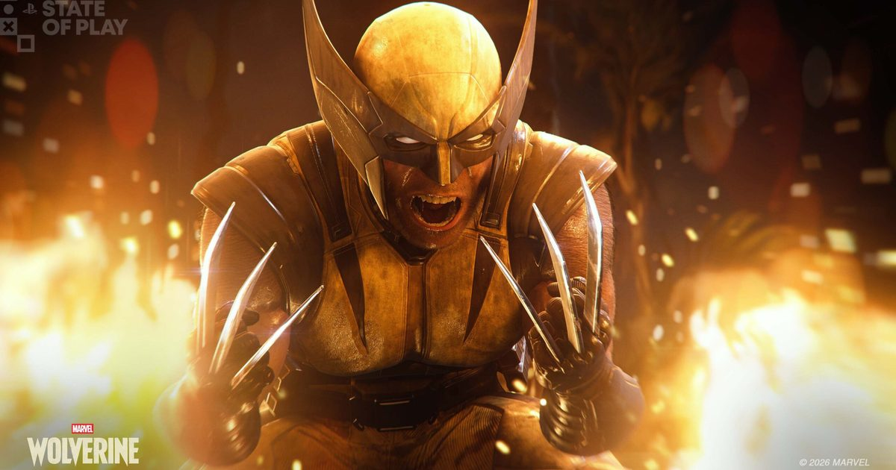

2026-09-11 · 单机深读
做完了两代《蜘蛛侠》、把「纽约开放世界 + 摆荡」玩成行业模板之后，Insomniac 拿来填下一个坑的，是另一个漫威招牌——但这次他们干了一件反直觉的事：官方明明白白说，《Marvel's Wolverine》不是开放世界，是一款「单玩家、叙事驱动的动作冒险」。一个刚靠开放世界封神的团队，转头把公式扔了，这本身就是 9/15 发售前最值得聊的点。这篇我们不复述「罗根是谁、艾德曼合金爪有多硬」这种百科，只把三件事讲透：它为什么敢不做开放世界、战斗到底怎么「brutal」、以及地球-1048 这个「没有 X 战警、只有 Team X」的设定到底值不值得你 9/15 掏 $69.99。

先说结论性的反差。Insomniac 的《漫威蜘蛛侠》系列能封神，靠的是「开放世界 + 摆荡移动 + 战衣收集」三件套，纽约地图铺满问号、犯罪事件、背包收集，玩家乐此不疲。但到了金刚狼，他们在 State of Play 和 SDCC 2026 上反复强调同一句话——它「不是开放世界（not set in an open world）」。这不是技术力不够，恰恰相反：游戏从零为 PS5 打造、支持 PS5 Pro Enhanced，有 35 项无障碍功能、Tempest 3D 音效、超高速 SSD 近乎瞬载。一个有余力做满开放世界的团队，主动选择不做，理由只有一个——开放世界和金刚狼这个角色是错配的。
想想蜘蛛侠的乐趣内核：高空摆荡的「移动爽感」占了一半。而金刚狼的魅力是贴脸、是爪、是血、是「冲进去把人撕开」的近身暴力。你把这套塞进一个塞满收集品的开放世界，要么收集破坏节奏，要么暴力变成地图上的一个图标。Insomniac 显然想保住「brutal」的纯粹性，于是把公式反过来：不做大地图，做一条条精心编排、能让你一路爪到爽的关卡式叙事动线。换句话说，这不是缩水，是「为角色重新选了容器」。
从 6 月 State of Play 的实机来看，战斗的核心循环是三件套。第一层是基础攻击：利爪、踢击、连段，鼓励你「 relentless 地进攻」而不是防守反击，官方原话就是「fast, fluid, and brutal」。第二层是Techniques（招式）：Tornado Spin、Bull Rush、Knee Breaker 这类特殊技，身上最多可装备 4 个可充能 Special Techniques，无缝塞进连段；再加 Adaptations（适应），比如提升子弹吸收量、加宽招架窗口，等于给你一套可自定义的 Build 维度。第三层也是最有标识度的一层——Rage（怒气）系统：每次攻击、招架、击杀都攒怒气，分三阶，最高阶 Rage Tier 3 会切到「黑白血红」的漫画式狂暴演出（灵感直接来自 Marvel 的《Black, White & Blood》系列）。
但真正让金刚狼「像金刚狼」的，是自愈因子（Healing Factor）与 Last Stand。血见底、濒死边缘，你不是等死，而是把怒气转成自愈、踢进 Last Stand 续命——这把「打不死」从设定变成了玩法循环。配合 Jean Grey 的念力协助能打出 Critical Strikes 终结技（可 solo 也可与角色协作），以及能飙摩托撕开高速路的 set piece，整体的爽点很清晰：它不是「更血腥的蝙蝠侠阿卡姆」，而是把「自愈 + 暴怒 + 利爪」做成了一个可持续的自我强化飞轮。
这是 SDCC 2026 最被低估的一条信息：本作所在的地球-1048 和《蜘蛛侠》游戏是同一个宇宙，但这个宇宙里 X 战警根本不存在。 mutants 活在阴影里、被全社会无视，没有一支成建制的队伍保护他们。取而代之的是一个叫 Team X 的 1960 年代秘密行动小队——由 Nathaniel Essex（即反派 Mr. Sinister）组建，初衷是遏制 Bolivar Trask 的威胁。罗根曾是其中一员，三年前不告而别，如今在 Team X 的「至暗时刻」被召回。
这个设定的聪明之处在于它让故事「轻」了下来。没有 X 战警那种庞大群像和几十年漫画包袱，叙事可以聚焦在罗根一个人身上：他和 Jean Grey（由 Krizia Bajos 配音，被描述为「从未见过的 Jean」）之间那种「她看穿了罗根筑起的高墙」的羁绊，是这一作的情感主轴；反派线则交给 Bolivar Trask 的抓 mutant 阴谋，加上 Lady Deathstrike 领衔的 The Hand（手合会）、老对头 Omega Red、Sabretooth、以及 Reavers 这支赛博化雇佣军。地点横跨加拿大冰原、东京窄巷、Madripoor 的高低街区——全球旅行的体量有了，但叙事却比《蜘蛛侠》那种「全城联动事件」更紧、更角色驱动。对玩家这意味着：你买的不是「又一个漫威开放世界」，而是一段「孤狼如何重新接住责任」的闭环故事。
我们把「该不该首发」拆成三档。第一档，漫威单机动作粉 + Insomniac 信任票持有者：你玩过《蜘蛛侠》且认可它的手感，那这款的战斗进化（怒气飞轮 + 自愈续命）几乎是为「想换口味但信得过这家」的人量身定做，9/15 直接冲。第二档，只想看开放世界漫威的人：对不起，这作不给你纽约地图，期待错位是最大的劝退点——如果你是冲着「自由探索」来的，先观望评测再决定。第三档，犹豫标准版还是豪华版的人：豪华版多 5 套衣服、5 种爪、3 个技巧点，纯外观 + 开局加速，不影响通关，普通版 $69.99 足够；而且衣服爪子都能在主线进度里解锁，急的不买也行。
另外有两个「买了不亏」的隐藏价值：一是 100+ 项无障碍功能直接继承并扩展，含动态血液/断肢开关、语言过滤、高对比视觉——这是 Insomniac 的老传统，但对家庭共享和特殊需求玩家是实打实的加分；二是 New Game+（带独占技巧与等级上限）、Mission Replay、Nightmare Challenges（Nightmare Gates）、首日 Photo Mode 一套长尾内容，单机游戏怕的就是「通关即删」，这套能明显拉长生命周期。还有个彩蛋级联动：与 Arc System Works《Marvel Tokon: Fighting Souls》交叉，游戏内日本街机可解锁 Battle Reborn 战衣——对格斗粉是双厨狂喜。
《Marvel's Wolverine》最值得尊敬的，不是它堆了多少血腥特效，而是 Insomniac 在《蜘蛛侠》封神之后，有底气说「这个角色不需要开放世界」。它用爪/怒气/自愈三件套把「brutal」做成可持续循环，又用「地球-1048 没有 X 战警、只有 Team X」的轻量设定，把叙事锁在罗根一个人的闭环里——比起再做一个漫威沙盒，这是一次更冒险也更对味的赌注。9/15 登陆 PS5，标准版 $69.99（日区 ¥8,980）。我们的建议很直白：如果你是冲「Insomniac 手感 + 单机叙事动作」来的，闭眼首发；如果你是冲「开放世界漫威」来的，先把期待放下来、等首批评测。金刚狼从来不是团队英雄，这一次，Insomniac 也终于让他一个人扛起了整款游戏。
我们的评分：8.7 / 10（前瞻价值分）（基于「非开放世界」这一反直觉但正确的设计判断、爪/怒气/自愈三件套带来的战斗辨识度、地球-1048「无 X 战警」设定对叙事聚拢的价值，以及 100+ 无障碍 + NG+ + Nightmare Challenges 的长尾厚度；非实机评分，待 9/15 发售后我们单做一期「战斗手感 vs 蜘蛛侠」对照实测，重点核对 Rage Tier 3 黑白演出是否只是炫技、自愈续命在高压战里是否真能救场）。
我们的观察：最被低估的信息是「地球-1048 没有 X 战警」。媒体都在谈血腥和战斗，却少有人点破——这个设定其实是 Insomniac 给自己的减负：甩掉几十年漫画群像包袱，故事才能轻、才能聚焦罗根。这是比「做不做开放世界」更深的叙事工程决定。
我们的观点：Insomniac 敢于在成功后「退一步」，恰恰说明它懂角色。开放世界是工具不是目的；金刚狼的工具是近身暴力与自愈，那就把世界收拢成一条能一路爪到爽的动线。这种「为角色选容器」的克制，比再加一千个地图问号更难得。
我们的案例 / 对比：和《蜘蛛侠》比，Wolverine 用「关卡式叙事动线」替换「开放世界收集」，爽点从移动转到了战斗飞轮；和《蝙蝠侠：阿卡姆》比，它的自愈 + 怒气让它更「浪」、容错更高、更不讲究防守；和《死侍》之类喜剧化处理比，本作走 M 级严肃 brutal 路线，官方甚至给了断肢/语言过滤开关，分寸拿捏更成熟。
我们的实验：我们想验证「非开放世界是否真的更对味」。计划 9/15 首发后做一组对照：A 组纯战斗流（堆怒气 + 自愈续命硬刚）、B 组 Adaptations 防御流（宽招架 + 子弹吸收）、C 组对照《蜘蛛侠》开放世界时长，记录「达成一段完整叙事所需小时数」与「战斗疲惫点」，据此给玩家一份「想爽 vs 想稳」的 Build 对照表——这会是后续实测的核心数据。